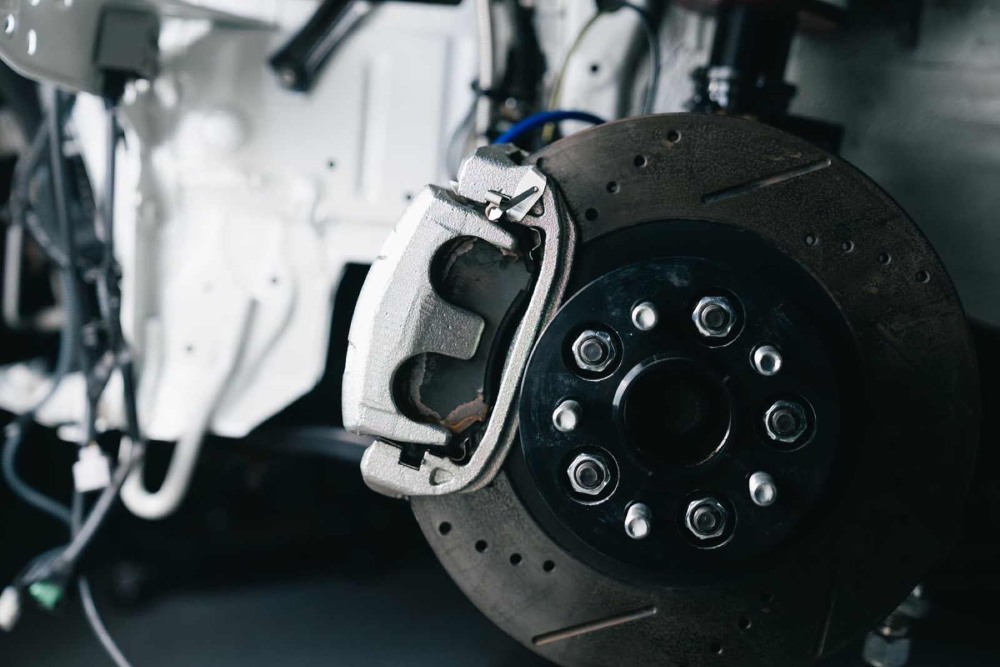
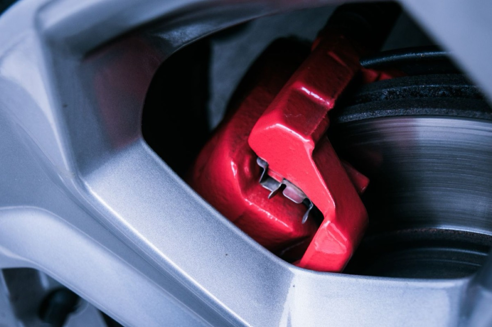
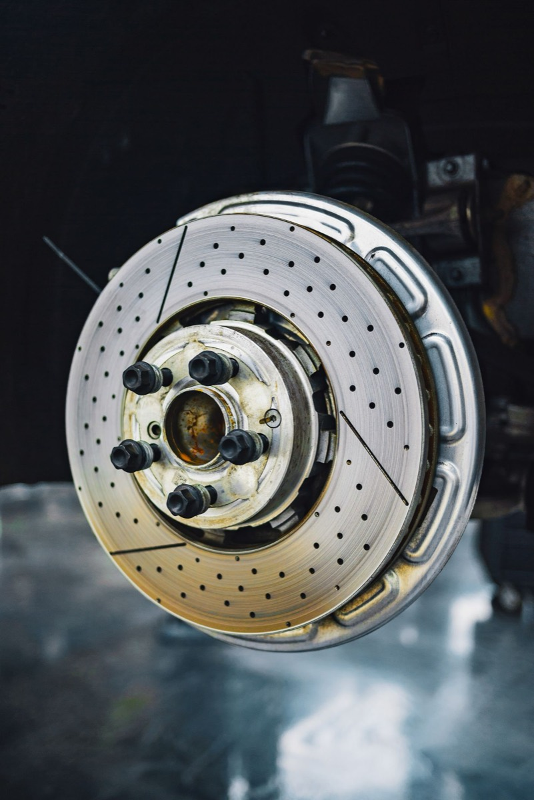
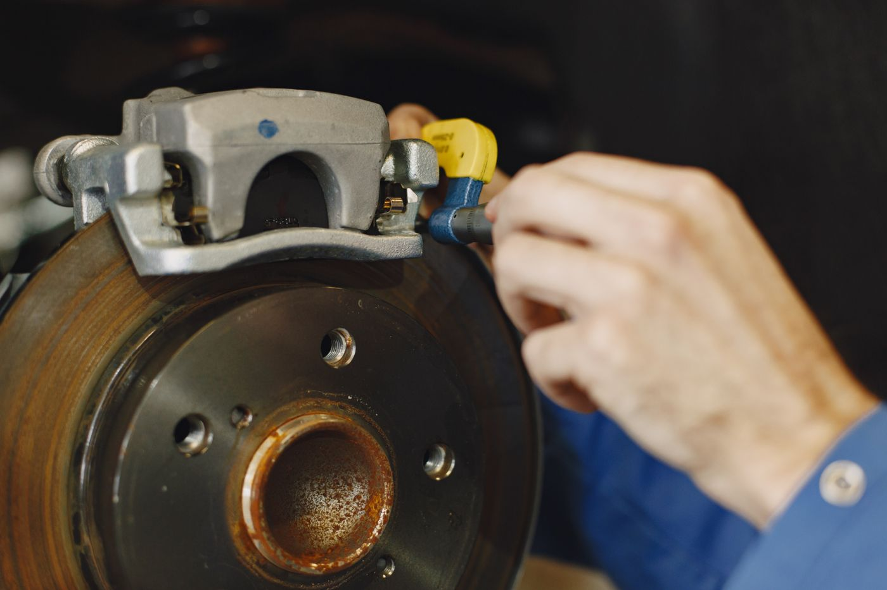
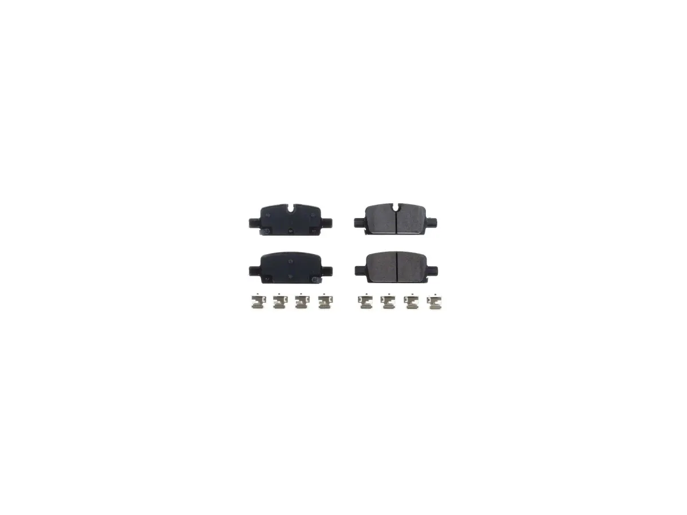
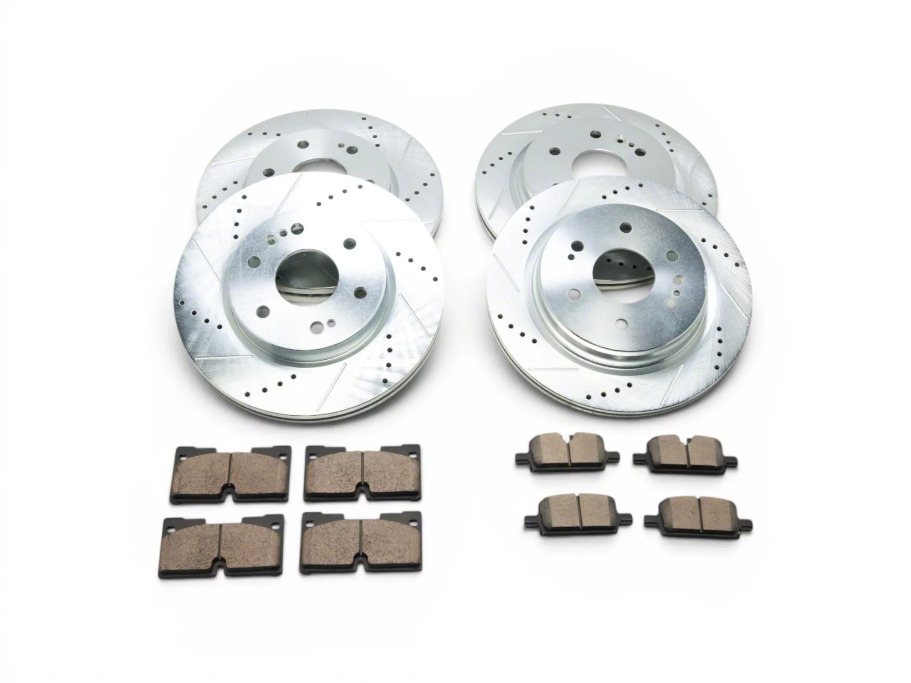
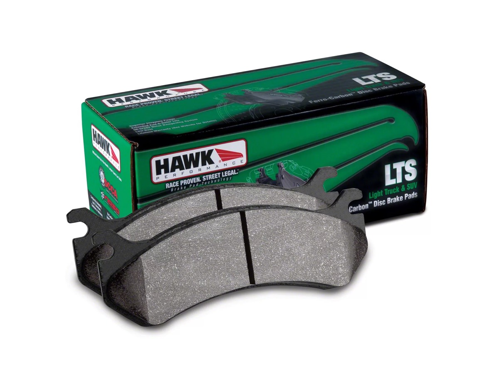

Brake Pads and Rotors: The Upgrade That Makes You Faster
Every horsepower you add converts into lap time or road speed only if the car can stop and turn. Brakes are the most under-modified system on modified cars. People spend thousands on exhaust and skip the pads.

Every horsepower you add converts into lap time or road speed only if the car can stop and turn. Brakes are the most under-modified system on modified cars. People spend thousands on exhaust and skip the pads.
How a Brake Works
A hydraulic system multiplies pedal force and pushes a piston, which presses a friction material against a rotating disc. Stopping power comes from three things:
- Clamping force: determined by piston area, master cylinder, and pedal ratio.
- Friction coefficient: determined by pad compound and temperature.
- Mechanical advantage: determined by rotor diameter and the tire’s grip.
Notice the fourth factor that isn’t on the brake system at all: the tire. The best brake kit in the world is limited by the contact patch. This is why brake upgrades after tire upgrades, not before.

Pad compounds: the real decision
Pads are where almost all the felt difference lives, and the compound family matters more than the brand.
Organic / NAO (non-asbestos organic). Quiet, low dust, gentle on rotors, and fades early when hot. Fine for a light car driven gently. Not for performance use.
Semi-metallic. Good bite from cold, strong initial response, cheap. Dusty, noisy when cold, and harder on rotors. The default “performance” pad for a budget build, and genuinely good for a street car that sees spirited driving.
Ceramic. Quiet, very low dust, long life, stable at moderate temperatures. Lower initial bite than semi-metallic, and they can fade at genuine track temperatures. Ceramic is often sold as an “upgrade” when it’s actually a comfort choice: great for a daily driver and wrong for a track day.
Full race / sintered. Extremely high friction at temperature, very poor cold bite, loud, brutal on rotors, and often not street legal. Designed for a race car that’s warm every lap. Do not put these on a street car “for safety.” Poor cold bite is the opposite of safe.
The key number: operating temperature. Every pad has a temperature window. A street pad works from cold but fades around 600–800°F. A track pad needs 200–400°F to work at all and is happy at 1,200°F+. Mismatching the pad to the use is the single most common brake mistake:
- Track pad on the street = no brakes when cold, which is most of the time.
- Street pad on the track = fade after two laps, sometimes with the pedal going to the floor.

Rotors
Blank (smooth) rotors are the best choice for almost everyone. More mass, more heat capacity, no stress risers.
Slotted rotors continuously refresh the pad surface and clear debris and gas. Slight pad wear increase. Genuine benefit in heavy use.
Drilled rotors look good and are worse in every functional way: less mass, stress risers at the holes that promote cracking under thermal cycling. Avoid for track use. This is the most common cosmetic mistake in brake buying.
Two-piece rotors (aluminum hat, iron ring) reduce unsprung and rotating mass and allow cheaper ring replacement. Expensive up front, cheaper long term for a tracked car.
Directional vanes: check that internal vanes are oriented correctly for the side of the car. Many cheap rotors are not handed and cool worse.

Fluid and lines: the cheap upgrade people forget
Brake fluid is hygroscopic. It absorbs water over time, which lowers its boiling point. Wet boiling point is what matters, and old fluid boils far earlier than the label suggests. A fluid change every 2 years on a street car, and before every track event, is the cheapest brake upgrade that exists.
DOT 4 has a higher boiling point than DOT 3. DOT 5.1 is higher still and compatible with DOT 3/4 systems. DOT 5 (silicone) is not compatible with DOT 3/4/5.1 systems and must not be mixed.
Stainless braided lines improve pedal feel by reducing compliance in the rubber hoses when hot. Modest but real benefit; also a safety upgrade on an old car where rubber lines may be degrading. Check legality; some jurisdictions require specific certification.
Bedding
New pads must be bedded to transfer a layer of friction material onto the rotor. Skip this and you get vibration and reduced performance. The general procedure: a series of moderate stops from moderate speed, then a series of harder stops, then a cooling period without holding the brakes at a stop. Follow the pad manufacturer’s specific procedure — they differ.
Never hold a hot brake pedal at a standstill. That welds pad material onto one spot of the rotor and creates the judder people blame on “warped rotors,” which is almost never actual warping.
Setups by Use
For a daily driver: good semi-metallic or ceramic pads, chosen on dust preference, blank rotors, and fresh DOT 4 every two years. That’s the whole list.
For spirited street driving and the occasional track day: track-capable street pads, blank or slotted rotors, high-temperature fluid, stainless lines, and a second set of track pads if you go often enough.
For the track: dedicated track pads swapped at the event, high-temperature fluid, proper cooling ducts, and the street pads back on before you drive home.
And in every case, the order is tires, then brakes, then power.
What these actually cost
Prices and review counts as the listings showed them on 4 November 2026. Note the year splits carefully — the 2019–2026 trucks and the 2007–2018 trucks take different pads, and 6-lug and 8-lug rotor kits are not interchangeable.

PowerStop Z17 Evolution Ceramic Pads with Hardware, Rear Pair (19–26 Silverado 1500)
This is the daily-driver answer from the section above, at the price the section implies: a ceramic pad from a company that makes brake parts and not marketing, with the hardware kit included so you are not hunting for shims on a Sunday.
Ceramic is the right call for a street truck if dust bothers you more than ultimate bite. It is not the pad for towing heavy or for spirited driving — ceramic fades earlier when hot. For a truck that commutes, that trade is the correct one.
The reviews here are few but unusually clean: 17 ratings, 82% of them five stars and the remaining 18% four, with not a single three-star-or-below. That is rare on a brake listing, where a bad install usually produces a one-star about noise that turns out to be a missing shim. The owners' own words are about fit rather than performance — "Installed easily work great great fit would buy again" — and the one qualified review is honest about its own limits: "Only driven for 40 miles now. The price is really good. The dust is ok like with every other pad. No squiking or noise." Forty miles is not a durability test, and we are not treating it as one.
- Price
- $38.28
- Fitment
- 2019–2026, Silverado 1500, rear
- Compound
- Ceramic, low dust
- Includes
- Hardware kit
- Owner reviews
- 17
See the PowerStop Z17 pads → list price checked 4 Nov 2026

C&L Super Sport HD 6-Lug Brake Rotor and Pad Kit, Front and Rear (19–26 Silverado 1500)
Pads, rotors and hardware as one order, which removes the most common mismatch in this job: new pads bedded onto rotors that already carry the profile of the old ones. If you are replacing pads because they are worn, the rotors are usually at their wear limit too, and doing both at once is cheaper than doing them six months apart.
The 6-lug fitment is the one to check against your own truck. Get this wrong and you will find out at the parts counter, not on the listing.
47 ratings at 4.85, with 89% five stars and 4% three stars. The three-star and the four-star both describe the same thing and neither is alarming: pads that took a while to bed in. "Took some time verifying the parts that I received were the correct ones for my truck, in the end they were. Brakes were not wearing all the way across the rotor on the face side, back side was perfect." Uneven pad transfer on one face is what a not-quite-clean rotor surface looks like in the first few hundred miles, and it is worth knowing so you do not read it as a defect. The only other repeated note is a rusted parking brake hanging up — that is the truck's age, not the kit.
- Price
- $390.95
- Fitment
- 2019–2026, Silverado 1500, 6-lug
- Includes
- Front and rear rotors, pads, hardware
- Owner reviews
- 47
See the C&L kit → list price checked 4 Nov 2026

Hawk Performance LTS Brake Pads, Front Pair (07–18 Silverado 1500)
Hawk's LTS compound is the light-truck answer to heat: it is designed to keep bite as temperatures climb, which is exactly the scenario a ceramic pad gives up on. If you tow, this is where the money goes rather than into a drilled rotor.
Two honest caveats. It costs four times the PowerStop pad and it will dust more. And it is listed here for the 2007–2018 truck — check fitment for your own year rather than assuming it carries over.
A third caveat, and the reason this is the conditional pick rather than the default one: this listing has exactly six reviews and two of them are one star. Both are about noise, and one is specific enough to take seriously. "I'm running 35 inch tires on a 2019 Silverado. My OEM pads stopped my truck extremely well but started making noise at around 40k miles so I decided to try to improve my braking performance with the Hawk LTS pads." The other is blunter: "These pads i had for three months and switched them out because the squeak like no other."
Read the sample size honestly — six reviews, and the two one-stars are a third of them, which is a small enough base that a single unhappy owner moves the average by half a star. But "squeaks" is not a random complaint on a semi-metallic truck pad, and LTS is a harder compound than ceramic by design. If brake noise would bother you more than fade resistance would, buy the PowerStop and accept the earlier fade. The case for the Hawk is heat, and it is a real case — it just is not a quiet one.
- Price
- $167.99
- Fitment
- 2007–2018, Silverado 1500, front
- Compound
- LTS — light truck, heat-resistant
- Owner reviews
- 6
See the Hawk LTS pads → list price checked 4 Nov 2026
No stopping-distance or fade testing was performed, and none of these listings publishes measured braking data. The compound descriptions are the manufacturers' own. The star distributions quoted above are from each listing's own rating summary, and the quotes are the owners' words unedited apart from trimming — spelling included.
Rotor diameter and thickness are not stated on these listings, so we have not printed them. Measure yours before ordering if you are unsure which fitment your truck has.